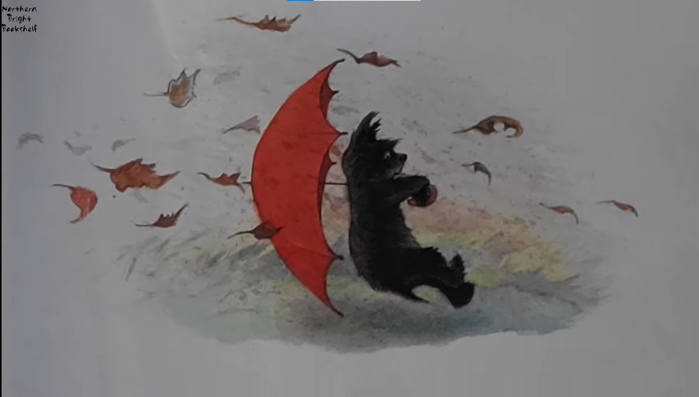

Instructions: In this interactive website you will be presented with a series of questions where you will have 5 seconds to pick the correct choice. You will only know if you have chosen correctly at the end of the game. If you are ready, click next and let the adventure begin.

Congratulations
You answered all the questions correctly. Well now I don't know what to say so enjoy this picture of a cat.